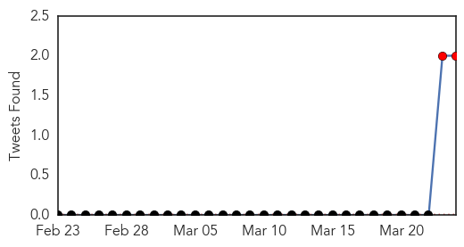
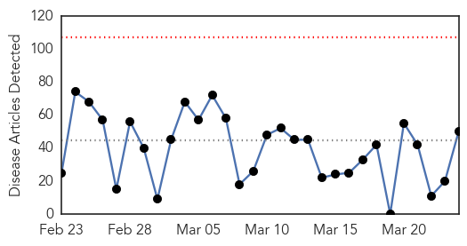
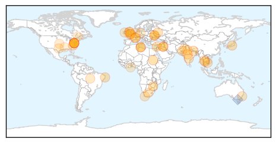
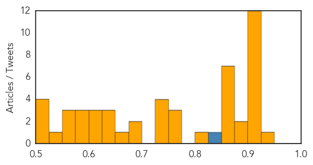

Ebola
30-Day Web Trend
4 alerts, 0 warnings

30-Day Twitter Trend
2 alerts, 0 warnings

Article Locations

Article Confidences

Top Articles:
- 1.000
- The Ebola Virus Just Killed 59 People in West Africa, But Don't Panic (Yet)
- 1.000
- UN Warns the Deadly Virus May Spread
- 1.000
- Ebola outbreak may have spread from Guinea to Liberia
- 1.000
- Ebola Threatens Sierra Leone
- 1.000
- Canada: Returning traveler from Africa ‘being examined for a suspected case of viral hemorrhagic fever’
- 1.000
- What You Need to Know About the Deadly Virus Spreading Across Western Africa
- 1.000
- Ebola virus outbreak kills 59
- 1.000
- Health officials scramble to contain Ebola outbreak
- 1.000
- Ebola Outbreak in Guinea Kills Dozens, May Spread to Other Nations
- 1.000
- Ebola virus reaches Guinea capital Conakry
- 1.000
- Ebola Outbreak Already Spreading, Health Officials Fear, Death Toll May Be Higher Than 59
- 1.000
- Homeland Security News Wire
- 1.000
- Ebola Outbreak; 59 Out Of 80 Cases Have Been Fatal
- 1.000
- Ebola outbreak in Guinea may spread to Liberia
- 1.000
- Ebola epidemic which already killed dozens spreads to Guinea's capital
- 1.000
- Guinea scrambles to contain deadly Ebola outbreak
- 1.000
- Deadly Ebola outbreak spreads in West Africa
- 1.000
- Ebola detected in Guinea victims, 50 dead
- 1.000
- MSF: ′We don′t know why Ebola happens′
- 1.000
- Ebola Outbreak Tied to 59 Deaths so Far in Guinea
- 1.000
- OUTBREAK! At least 59 people dead from ebola in Guinea
- 1.000
- Ebola outbreak in Guinea
- 1.000
- Sudan Vision Daily
- 1.000
- Ebola outbreak in Guinea may spread to Liberia - MyNorthwest
- 1.000
- Guinea scrambles to contain deadly Ebola outbreak (Update)
- 1.000
- Guinea Ebola outbreak believed to be deadly Zaire strain
- 1.000
- Ebola: 59 dead out of 80 cases. Still spreading
- 0.999
- Guinea outbreak believed to be deadly Zaire strain
- 0.999
- The Ebola virus in Guinea: «The situation is of very high concern
- 0.999
- Guinea dispatches equipment to contain outbreak of Ebola
- 0.999
- U.N. Says Ebola Is Back and Spreading Fast, Killing at Least 59 in Guinea
- 0.999
- Ebola outbreak in Guinea ‘could become regional epidemic’
- 0.999
- Ebola outbreak in Guinea sparks health fears in West Africa - News
- 0.999
- Kenya : Guinea confirms fever is Ebola, has killed up to 59
- 0.999
- Ebola outbreak in West Africa kills at least 61
- 0.999
- After nearly 2 years, Guinea starts countdown to end of Ebola transmission after 11,000 die
- 0.999
- Canada has possible Ebola case: Health officials - Emirates 24
- 0.999
- Canadian man in hospital tests negative for Ebola
- 0.999
- Ebola outbreak kills scores of people in Guinea 24/03/2014
- 0.999
- Ebola virus not ruled out for man isolated in Saskatoon hospital
- 0.998
- Ebola virus outbreak has reached Guinea
- 0.998
- Virus in Guinea capital Conakry not Ebola - Panorama
- 0.998
- Virus in Guinea capital Conakry not Ebola
- 0.998
- Guinea Officials Scramble to Contain Ebola Outbreak
- 0.998
- At least 59 people dead in Guinea Ebola outbreak
- 0.998
- Ebola epidemic spreads to Guinea's capital
- 0.997
- Possible Ebola case in Canada
- 0.997
- Guinea Ebola spreads to capital Conakry
- 0.997
- Ebola outbreak in Guinea ‘could become regional epidemic’
- 0.995
- Possible Ebola case reported in Canada
Showing top 50 articles...
Top Tweets:
- 0.885
- RT: UPDATE: Ebola cases in Guinea: 86 suspected cases (of which 13 lab-confirmed), incl. 59 deaths via
- 0.858
- Estimates of MDR-TB incidence in children; Ebola outbreak in Guinea. HealthSecurity http://t.co/JWXBy2z7Nh
- 0.664
- RT: ECDC produces rapid risk assessment of Ebola outbreak in Guinea http://t.co/9WePFOySoP
Unknown
30-Day Web Trend
0 alerts, 0 warnings

30-Day Twitter Trend
2 alerts, 0 warnings

Article Locations
Article Confidences
Top Articles:
- 0.935
- Zimbabwe Marks World TB Day With Calls to End Stigma
- 0.917
- Chicago Tribune
- 0.917
- Chicago Tribune
- 0.917
- Chicago Tribune
- 0.917
- Chicago Tribune
- 0.917
- Chicago Tribune
- 0.917
- Chicago Tribune
- 0.917
- Chicago Tribune
- 0.917
- Chicago Tribune
- 0.917
- Chicago Tribune
- 0.917
- Chicago Tribune
- 0.910
- The world windows to Thailand
- 0.910
- The world windows to Thailand
- 0.900
- Iraq's first polio case in 14 years confirmed by WHO
- 0.878
- Displacement, violence likely cause of Iraq’s first polio case in 14 years - Iraq
- 0.871
- Drug-resistant TB on the rise in Hyderabad
- 0.866
- Number of people listed as missing in Washington state landslide rises to 176
- 0.866
- File photo of cow carcasses on the ground near Forest, Pernambuco state
- 0.866
- Russian, Ukrainian foreign ministers to hold talks
- 0.866
- Russian PM says international talks needed to secure Crimea's energy supply
- 0.866
- A girl looks out of a window after clashes in south Beirut
- 0.852
- ‘TB deaths in Punjab reduced by 53pc’
- 0.809
- Beware! Your office may be home to TB germs
- 0.755
- About 35% of TB cases ‘missed’, National, Phnom Penh Post
- 0.753
- UN marks World Day with calls for global solidarity to eradicate tuberculosis - World
- 0.751
- UN marks World Day with calls for global solidarity to eradicate tuberculosis
- 0.746
- Tuberculosis makes a comeback
- 0.740
- A million children a year develop TB -- study
- 0.728
- Big Data Hubris: Google Flu versus reality
- 0.725
- World TB Day 2014 -- 10 reasons docs think the tuberculosis burden is rising
- 0.688
- Drug-Resistant TB: Dying for Better Treatment
- 0.687
- Vaccine against Glandular Fever ‘could prevent cancer’
- 0.664
- In Conversation: Paul Farmer on Today's Tuberculosis Emergency and Our Path to Saving Millions of Lives
- 0.640
- Somalia makes progress on TB, but drug resistant strain worries experts - Somalia
- 0.638
- Vaccines still key to hopes of quenching AIDS pandemic
- 0.634
- Glandular fever vaccine 'could prevent 200,000 cases of cancer'
- 0.624
- Diabetes and TB: A growing threat
- 0.616
- SHOCKING: In 7 years, 13,840 TB patients have died at Mumbai's Sewri hospital
- 0.600
- Kirkland Signature Grilled Chicken Breast Strips recalled
- 0.600
- On troll against tuberculosis
- 0.584
- New childhood TB cases double earlier estimates
- 0.578
- MSF acknowledges encouraging dialogue on Rakhine but clinics remain closed - Myanmar
- 0.575
- A long fight against Tuberculosis
- 0.557
- Myanmar: MSF acknowledges encouraging dialogue on Rakhine but clinics remain closed
- 0.557
- World TB Day: Tackling The Myths And MDR-TB
- 0.541
- Mystery illness which has killed 21 dogs still baffling experts
- 0.521
- Tracebacks From PED Infected Farm in Manitoba Now Complete
- 0.521
- Doctors hope for cure in a 2nd baby born with HIV
- 0.512
- PPP Cure for MDR Tuberculosis
- 0.504
- Japanese mushroom extract may eliminate cervical cancer-causing virus
Showing top 50 articles...
Top Tweets:
- 0.840
- RT: The Flu season is approaching! Book to have your Flu Vaccination at our instore Flu Vaccine Clinic with a... http://t.…
- 0.555
- Manualidades con reciclados: El próximo taller se realizará el mañana martes 25 de marzo en otra escuela de Yp... http://t.co/cIUgzpJxwO